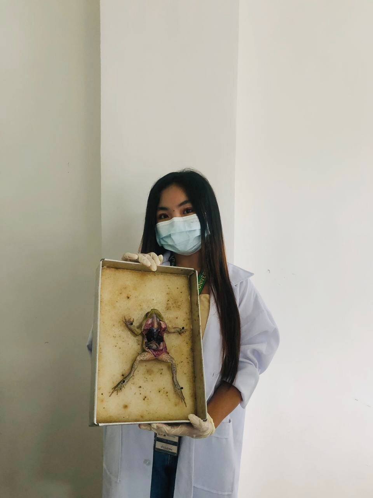

JOELYN NAVIDA PAGADUAN | Science Major
I am a 3rd-year General Science major and student educator at Mindoro State University. Welcome to my digital space where I document my journey in pedagogy and science.
Please wait while we fetch a new scientific term...
Maghanap sa Journal:
"Initialization of the Sci-Navida digital ecosystem. This log marks the beginning of a reflective journey through 21st-century pedagogy and scientific documentation."
"Science is a way of thinking much more than it is a body of knowledge."
— Carl SaganExploring the unseen world through the lens.
Visible cell walls and nuclei. This demonstrates the organized structure of plant tissues under high power objective.
Microscopic life including Amoeba and Paramecium, showing diverse locomotion and biological interactions in freshwater.
Red blood cells showcasing their unique biconcave shape, essential for efficient oxygen transport throughout the body.